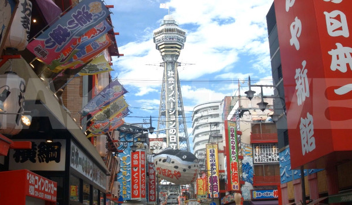
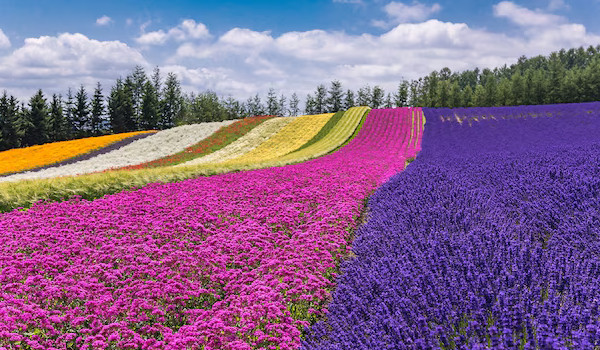
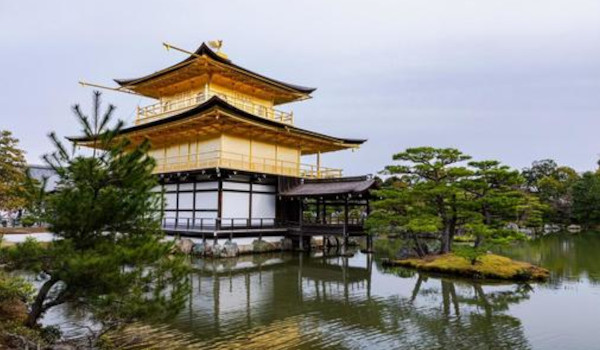
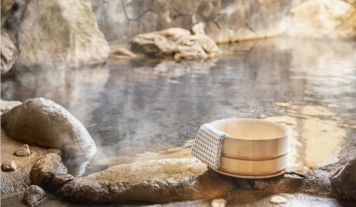

日本の観光スポット
都市・自然・歴史・温泉、さまざまな魅力が詰まった観光地をご紹介します。
都市観光 - 活気あふれる街並み

日本の都市には、伝統と最先端が共存しています。ショッピングやグルメ、エンターテインメントを楽しめる場所が数多くあります。
自然観光 - 四季を感じる絶景

日本には山や湖、海岸線など、多彩な自然が広がっています。四季折々の景色を楽しめるスポットが全国に点在しています。
歴史的建造物 - 時を超える遺産

日本には、城や神社仏閣など、歴史を感じられる建造物が多く残されています。伝統的な建築美を楽しむことができます。
温泉 - 癒しのひととき

全国に点在する温泉地では、美しい景観とともに心身を癒す時間を過ごせます。露天風呂や足湯など、さまざまなスタイルの温泉を楽しめます。